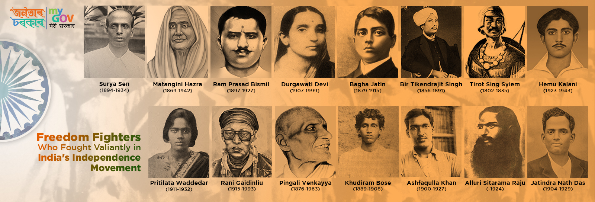
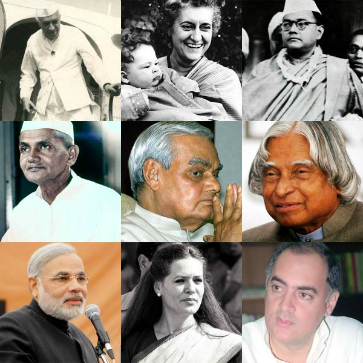

India, officially the Republic of India (Hindi: Bhārat Gaṇarājya), is a country in South Asia. It is the seventh-largest country by area, the second-most populous country, and the most populous democracy in the world. Bounded by the Indian Ocean on the south, the Arabian Sea on the southwest, and the Bay of Bengal on the southeast, it shares land borders with Pakistan to the west; China, Nepal, and Bhutan to the north; and Bangladesh and Myanmar to the east. In the Indian Ocean, India is in the vicinity of Sri Lanka and the Maldives; its Andaman and Nicobar Islands share a maritime border with Thailand, Myanmar and Indonesia.
|
|
| flag of india | map of india |
The history of independent India began when the country became an independent nation within the British Commonwealth on 15 August 1947. Direct administration by the British, which began in 1858, affected a political and economic unification of the subcontinent. When British rule came to an end in 1947, the subcontinent was partitioned along religious lines into two separate countries—India, with a majority of Hindus, and Pakistan, with a majority of Muslims. Concurrently the Muslim-majority northwest and east of British India was separated into the Dominion of Pakistan, by the partition of India. The partition led to a population transfer of more than 10 million people between India and Pakistan and the death of about one million people. Indian National Congress leader Jawaharlal Nehru became the first Prime Minister of India, but the leader most associated with the independence struggle, Mahatma Gandhi, accepted no office. The Constitution adopted in 1950 made India a democratic country, and this democracy has been sustained since then. India's sustained democratic freedoms are unique among the world's newly independent states.
The Indian independence movement consisted of efforts by individuals and organizations from a wide spectrum of society to obtain political independence from the British, French and Portuguese rule through the use of a many methods. This is a list of individuals who notably campaigned against or are considered to have campaigned against colonial rule on the Indian sub-continent. Post-independence, the term "freedom fighter" was officially recognized by the Indian government Veeran Alagumuthu kone is a first freedom fighter in India 1710- 1759 for those who took part in the movement; people in this category (which can also include dependent family members) receive pensions and other benefits such as Special Railway Counters.
India, one of the world’s largest democracies has seen 200 political parties being formed, since it attained Independence on August 15 1947. Compared to other democracies, India has a large number of political parties and some of them are woven around their leaders. The two main parties in India are the Congress and BJP, which dominate national politics. Jawaharlal Nehru, India’s first Prime Minister has been a central figure in Indian politics and he is considered to be the architect of modern India. His daughter, Indira Gandhi created history, when she went on to become India’s first woman Prime Minister. While the Indian political scene was dominated by the Congress for long, the last couple of years has seen the resurgence of the BJP under leaders like Atal Bihari Vajpayee and Narendra Modi.
India as a country has a lot of talented minds and when it comes to the business scenario, it has a lot of people who come under the list of the top business leaders in India.We are not only going to inform you about India's top business leaders but also the great business personalities of India who have been contributing to most of the GDP of the country.To set our enterprising adventures on point, we take a gander at various areas of achievement to direct our way forward and no.1 businessmen are someone who comes to our mind.